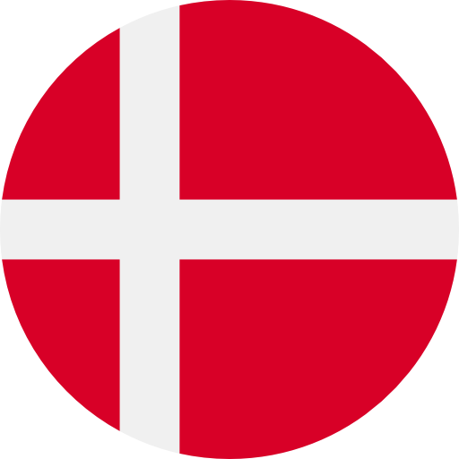
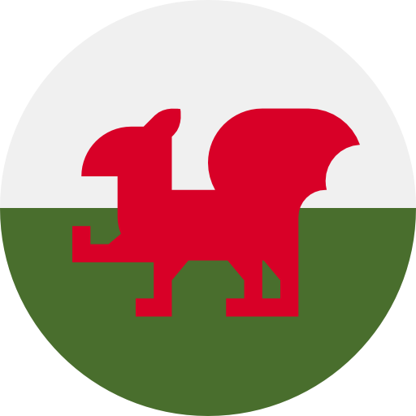
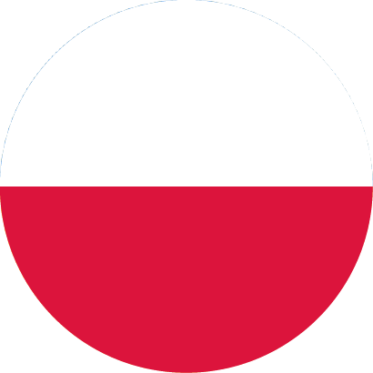

La UEFA definió en Bucarest los grupos que ocuparán los seleccionados clasificados para el certamen que se disputará el año que viene.
Este sábado se realizó en Bucarest el sorteo para la Eurocopa . Las selecciones clasificadas al certamen continental ya conocen sus rivales para la fase de grupos, que comenzará en junio del año que viene.
La UEFA definió en Bucarest los grupos que ocuparán los seleccionados clasificados para el certamen que se disputará el año que viene.
Así quedaron los grupos:
Grupos Euro 2020
Grupo A
Grupo B
Grupo C
Turquía

Dinamarca
Holanda
Italia
Finlandia
Ucrania

Gales
Bélgica
Austria
Suiza
Rusia
Repesca D
Grupo D
Grupo E
Grupo F
Inglaterra
España
Repesca A
Croacia
Suecia
Portugal
Repesca C

Polonia
Francia
Rep. Checa
Repesca B
Alemania
Hamilton y las claves que dibujarán el Mundial 2020
Hamilton, Verstappen y Leclerc, en el podio de Yas Marina.
La ambición del británico, empeñado en cerrar el campeonato "con estilo", supone el mejor aliciente para el futuro de la F1
La soporífera victoria de ayer en Yas Marina, fruto de la apabullante superioridad de Mercedes, no debe devaluar un ápice los méritos de Lewis Hamilton, capaz de igualar en 2019 su récord de victorias (11) con el que ya aplastó a la competencia en 2014 y 2018. La ambición del británico, empeñado en cerrar el Mundial «con estilo», supone el mejor aliciente para el futuro de la Fórmula 1, que apurará su última temporada antes de la revolución reglamentaria.
Hasta el 15 de marzo, cuando eche a rodar en Melbourne el Mundial 2020, dos preguntas flotarán por el paddock: ¿Cómo discutir la tiranía de las Flechas de Plata? ¿Cómo demonios frenar a Hamilton en su ascenso hacia el séptimo cielo de Michael Schumacher?
Mercedes y el aburrimiento
La advertencia de ayer del hexacampeón, poco después de los acostumbrados donuts con su W10 en la recta de meta, sonó de lo más tajante. «Estos muchachos trabajarán a toda máquina para tratar de elevar el listón, así que este invierno tendré que hacer lo mismo. Sinceramente creo que puedo, porque me siento fresco y listo para continuar», adelantó Hamilton como homenaje a sus ingenieros y mecánicos.
A los 34 años, sólo uno menos que El Kaiser en 2004, el aburrimiento se antoja como su único límite. Por si quedaba alguna duda, ayer rubricó en Abu Dhabi el sexto Grand Slam de su vida (victoria, pole, vuelta rápida y liderato en todas las vueltas), con el que superaba el registro del propio Schumacher y de Alberto Ascari.
Renovación en Ferrari
Una cifra, concisa y devastadora, resume el fracaso de la Scuderia. Nada menos que 235 puntos de déficit frente a Mercedes en una temporada para el olvido. Ayer, tampoco pudo paladear el podio de Charles Leclerc, demorado más de una hora por una irregularidad en el depósito de combustible del monegasco. La multa de 50.000 euros constituye el último eslabón de una intolerable cadena de errores, iniciada con las órdenes cruzadas en Shanghai.
Desde entonces, esperpentos en Montmeló, Singapur o Sochi y un tétrico doble cero como guinda en Interlagos. Mattia Binotto, máximo responsable técnico, necesita poner orden de manera urgente. En primer lugar, promocionando a Leclerc por delante de Sebastian Vettel. Después, con una renovación en los cargos intermedios, tanto a nivel estratégico como mecánico.
Red Bull y la alianza con Honda
«Ha sido una temporada positiva en líneas generales. Tercero en el Mundial es un gran resultado para mí y para el equipo», resumió ayer Max Verstappen sobre su 2019, coronado con dos victorias, tres poles, nueve podios y 29 puntos más que el año anterior.
Siendo positivos, estos datos sólo suponen el punto de partida en la alianza entre Red Bull y Honda, asegurada hasta 2021 y con visos de prolongarse hasta 2023. «Estamos muy contentos con ellos. Es como una liberación», concedió el jueves Helmut Marko, uno de los capos de la escudería austriaca.
Más podios para McLaren
El sentido abrazo de Fernando Alonso suponía ayer un fabuloso reconocimiento para Carlos Sainz, décimo en la meta y sexto en el Mundial. «¡El adelantamiento a Nico Hulkenberg en la última vuelta no lo olvidaré!», proclamaba el madrileño en un comunicado de McLaren donde no se escatimaba en exclamaciones. El próximo curso, el último con Renault antes de montar motores Mercedes, debe servir para estrechar el cerco con los tres equipos de arriba. Y para subir a más podios.